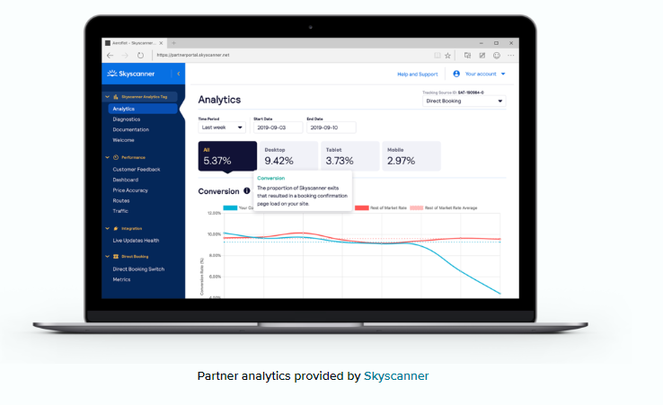

PREDICTIVE ANALYTICS IN E-TOURISM - Finding the best cost strategy.
Introduction :
An average traveler starts researching before they even have a particular destination in mind. And it takes them about 15 weeks to make a final decision. Interestingly, in the era of flight aggregators and websites with massive hotel inventories, as consumers, we still tend to trust our own instincts and dig for better and cheaper options. This also means that online travel platforms have an opportunity to affect our final decision if their proposition is very attractive.
Data Description :
Below has five categories,each addressing an e-Tourism's pivotal uncertinities.
Acquisition analytics.
How do you acquire more qualified traffic? These are metrics for determining the most effective channels, adverts, metasearch engines, and conversion from them.
Demand analytics.
What’s the current travel market demand? Here you collect data about the most popular destinations, dates, traveler trends, segments, etc.
Revenue analytics.
How do you generate more income? These metrics analyze the performance of our commissions in regard to competitor prices.
Supplier analytics.
How do you choose the best suppliers? This is all about supplier performance including infrastructure, inventory, data quality, etc.
Costs and profit analytics.
How is the business doing in general? Here we can see specific articles about our spendings and earnings.
Usability and product analytics.
How convenient is our website? Usability metrics explain customer behavior on the website/app, user journey, etc. Here we are considering additional but equally necessary product metrics for an OTA as an eCommerce business.

Techniques Used :
the techniques involve a combination of data analytics, metasearch optimization, competitor benchmarking, and leveraging web analytics reports to gain valuable insights into an OTA's performance and market dynamics. These insights can guide strategic decisions and help the OTA stay competitive in the online travel market.
Data Preprocessing :
Here, Data preprocessing involves :
- Collect data from various sources such as the online travel agency's databases, third-party APIs, web scraping, or any other relevant sources.
- Handle missing values: Identify and decide how to handle missing data (impute, remove, or flag).
- Remove duplicates: Check for and eliminate any duplicate records in the dataset.
- Correct inaccuracies: Correct any errors or inaccuracies in the data.
- Handling outliers, Data Reduction, Data Splitting, Normalization and scaling, Addressing imbalances
Conclusion :
e-Tourism take advantage of having a better opportunity to understand the customer. That data collection is getting bigger and smarter. It’s used to target customers with optimized search results, specific sort order and filters, and even the number of results because some buyers can be overwhelmed if they see more than five. OTAs could go even further and pass their discoveries on to their partners in terms of what could be done to increase the value of their services, particularly how to make their offers more available to different customer tiers.
Result :
customer data plays a vital role in distribution of prices of various categories.